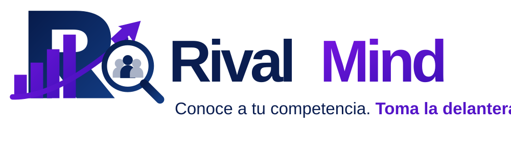

Radar de mensajes competitivos
Comunicación comercial de marcas
Contexto del proyecto
Rival Mind organiza la lectura de páginas públicas para que una persona pueda comparar los mensajes comerciales de varias marcas con fragmentos verificables.
Problema identificado
Comparar marcas suele exigir revisar páginas una por una y resumir sus mensajes manualmente.
Construir un MVP que extraiga y compare los mensajes de las páginas principales indicadas y muestre la evidencia para revisar cada hallazgo.
Oportunidad e impacto
Capacidades actuales
Jina Reader devuelve Markdown y cada resultado conserva su fuente.
Gemini como primera opción, Groq como respaldo y reglas locales si ambos fallan. Las citas se verifican contra el texto.
Filtra texto de interfaz, omite instrucciones sospechosas y permite continuar si falla una página.
Incluye las fichas individuales y la comparación consolidada, con fuentes, citas y limitaciones.
Impacto por comprobar
Solución implementada
Marca propia opcional
Citas comprobadas contra el texto de origen
Si una página falla, el análisis continúa con las demás. Si el texto resulta insuficiente, Rival Mind no completa la ficha con hallazgos inventados.
Indicadores de productividad
| Indicador propuesto | Fórmula / método | Línea base | Resultado actual | Seguimiento |
|---|---|---|---|---|
| Tiempo para preparar y revisar una comparación | Minutos desde el inicio hasta una comparación revisada por la persona usuaria | Por medir con el proceso actual | No medido en pruebas de campo | Comparar una tarea equivalente con y sin Rival Mind |
| Hallazgos con evidencia rastreable | Citas que coinciden con su texto fuente ÷ citas presentadas | Por establecer en páginas reales | Pruebas automatizadas con citas sintéticas pasan | Auditar una muestra de resultados del piloto |
| Extracciones suficientes | Páginas suficientes ÷ páginas ingresadas | Depende de las URLs y sus restricciones | Se etiqueta insuficiencia; no se fuerza conclusión | Registrar accesibilidad y calidad por página |
Próximos pasos
La siguiente etapa consiste en comprobar si el informe ayuda a tomar decisiones de contenido, no solo si el sistema logra extraer texto.
Probar con páginas reales
Usar URLs públicas de un sector elegido y revisar qué contenido obtiene Jina.
Hacer un piloto con usuarios
Observar cómo estrategas o asesores leen y verifican las evidencias.
Medir tiempo y calidad
Registrar tiempos, correcciones humanas y citas aceptadas o descartadas.
Validar el informe exportado
Probar PDFs con resultados reales en distintos lectores y revisar sus fuentes y saltos de página.
Muchas gracias
Rival Mind · Radar de mensajes competitivos